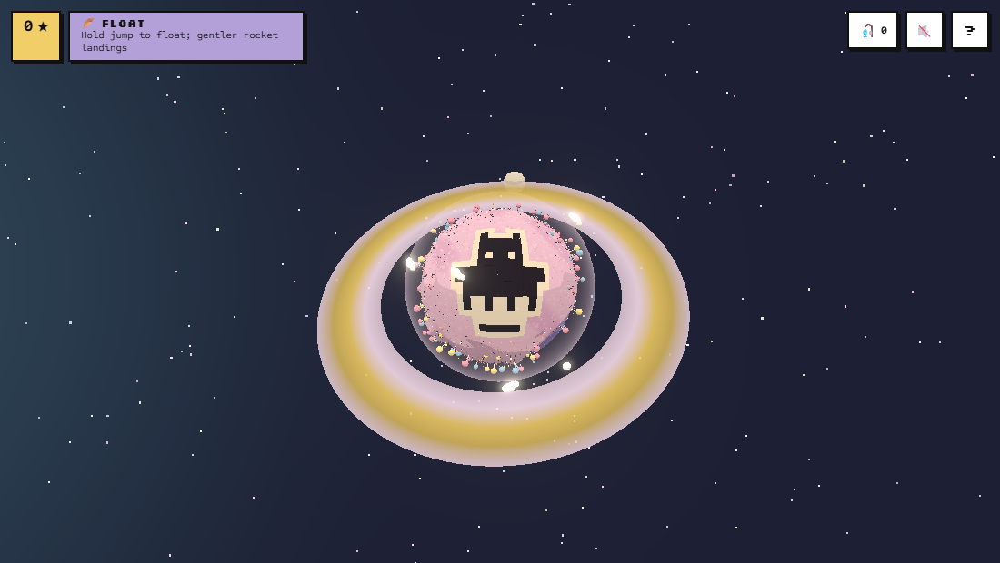
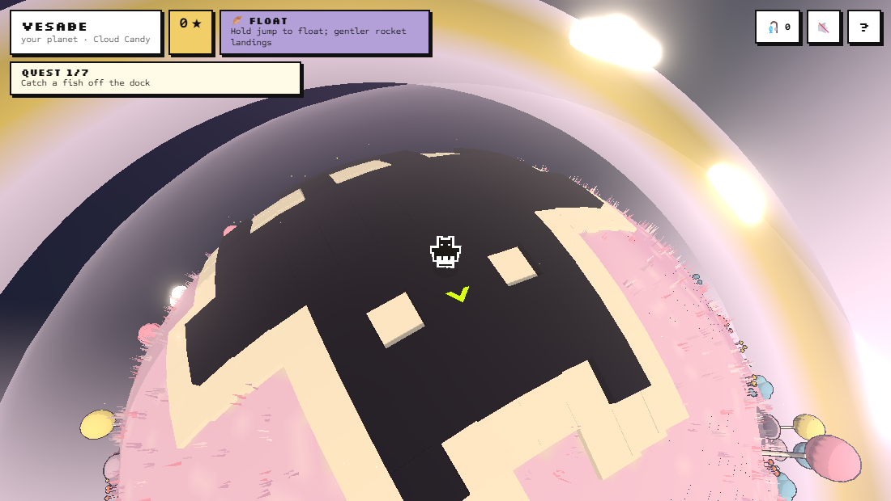
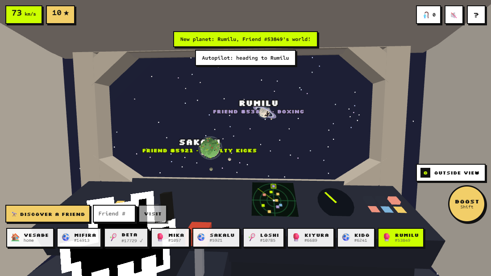
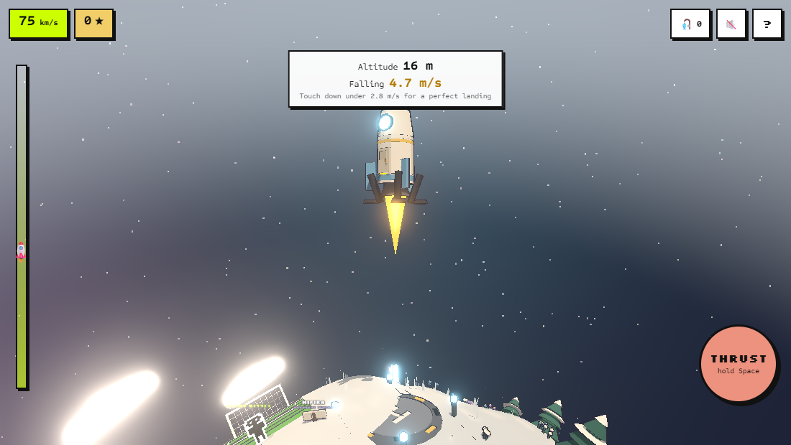
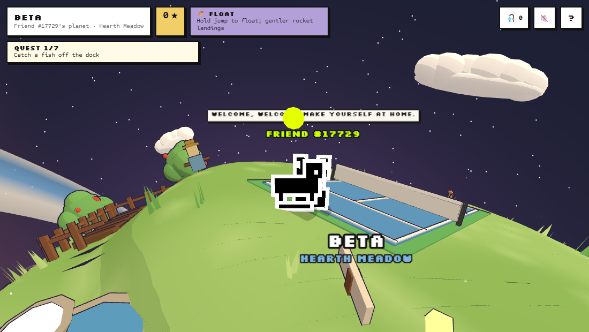
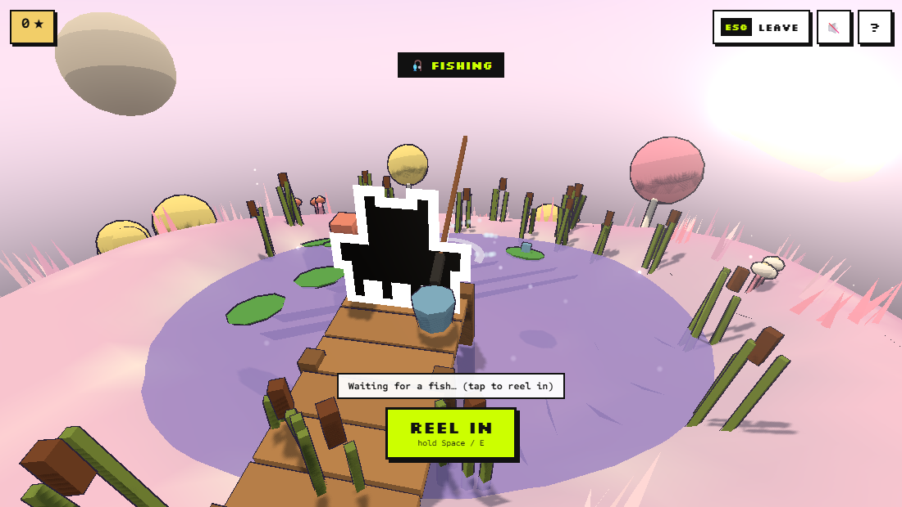
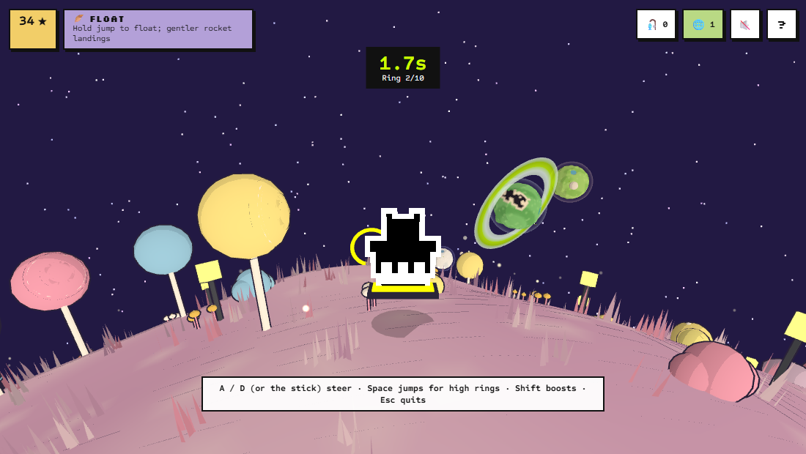
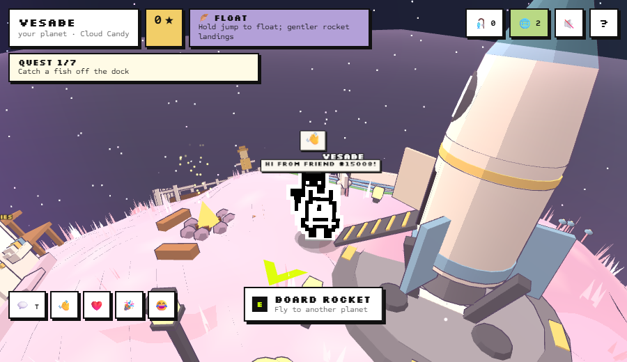

Playing needs a browser wallet on Robinhood mainnet (chain 4663) holding a hardwired Generations NFT. No RF, signature or transaction is ever used. No wallet? The trailer shows it all.
Your Friend is the main character
🪐 Its pixels are its planet
The Friend's canonical 16×16 frame, black mask with the white halo, is raised across the ground: seen from space, on every landing, and walkable.
🌈 Its family is its world
Nine biomes with their own sky, trees, water, fish, crop, night glow and voice: tundra, lantern isles, meadow, moss garden, dunes, cloud candy, ridge, reef, hollow grove.
🪶 Its family is its perk
Hoverers float, Colossus hits harder, Family grows crops twice as fast, Masks can't be read by the keeper, Sparklings light up the night… every family plays differently.
🔢 Its token is its planet
Name, size, layout, rings, moons and sport come from the token number, so a Friend's planet is the same for everyone who visits.
Screens









What you do
| Activity | How it plays |
|---|---|
| 🎣 Fishing | Aim, hold to charge the cast. A fish nibbles, then bites: hook it, then reel while easing off on its runs and pulling the other way. 22 species. |
| 🌱 Farming | Plant the planet's crop on a 3×3 farm and harvest it when it's ripe. |
| ⛏️ Treasure · 🦋 Butterflies | Dig at sparkles (with one rare treasure per family) and catch six kinds of butterfly. |
| 🛹 Ring race | Hoverboard through ten rings looping around the planet; best time per planet. |
| ⚽ 🎾 🥊 Sports | Against the planet's Friend: a two-way penalty shootout, tennis with real bounces and scoring, and Punch-Out style boxing. |
| 🚀 Rocket | Board up the ramp, launch from the cockpit, steer or autopilot, fly the landing burn. 🔭 Discover any Friend by token number. |
| 🌐 Online | Everyone shares the galaxy: see other Friends on your planet, chat, wave, and fly to where they are. Peer to peer; only Friend numbers, positions and chat are shared. |
Rewards are ★ stars, trophies and a collection book: never RF.